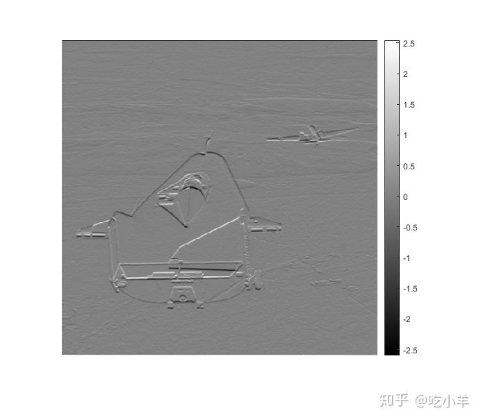

Home
本示例说明如何显示带有色标的灰度图像，该色标指示数据值到颜色的映射。如果您将非常规范围数据显示为图像，则查看数据值与使用颜色栏显示的颜色之间的对应关系特别有用。
读取并显示灰度图像。
I = imread('liftingbody.png');
将图像转换为数据类型double。数据在[0，1]范围内。
I = im2double(I);
dataRangeI = [min(I(:)) max(I(:))]
dataRangeI = 1×2
0 1
使用边缘检测过滤器过滤图像。过滤后的数据超出默认范围[0，1]，因为未对过滤器进行标准化。
h = [1 2 1; 0 0 0; -1 -2 -1];
J = imfilter(I,h);
dataRangeJ = [min(J(:)) max(J(:))]
dataRangeJ = 1×2
-2.5961 2.5451
使用已过滤数据的整个显示范围显示已过滤图像。imshow将最小数据值显示为黑色，将最大数据值显示为白色。
imshow(J,[])
使用该colorbar功能将色标添加到图像。
colorbar

======================================================================
我的测试结果及程序
下面是我测试的代码：

注：本文根据MATLAB官网内容修改而成。